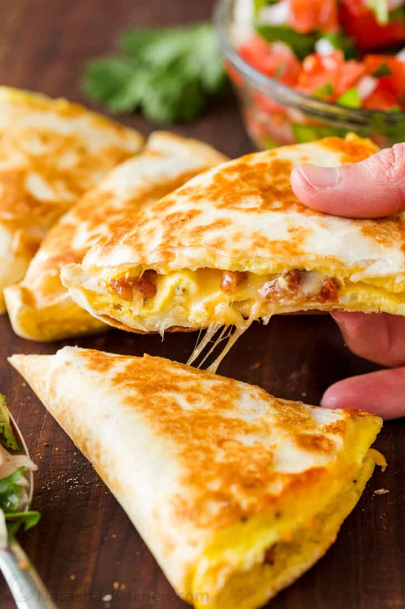

Breakfast Quesadilla's

This would be one of the easiest recipes to make on this page. Its a one pan breakfast that should just take
at least 10 minutes to make. The recipe is also flexible to your choice of meat, choice of tortilla, or choice of
vegetables. You even serve them with Pico de Gallo or Salsa. Traditional sauces like ketchup and mayonnaise can be used also.
Most of the ingredients are everyday items you have in your house hold. If you don't have some or none of these items
go to the grocery store and get them.
Ingredients
Steps
Follow the steps below to cook your tasty Quesadilla's
- Heat pan over medium heat. Cook Sausage or Bacon for about 2 minutes. Remember to flip and move until browned and
cooked through then move to plate. If using cooked ham, heat it up in microwave or low heat or you can throw it over
the cheese in step 4
- In a separate bowl, add 2 large eggs with a pinch of salt and pepper and beat with fork. You can add your choice of
seasoning to taste. Once done beating the eggs, pour the eggs into pan and evenly spread it across the pan. Cook on low heat
until eggs are almost cooked through. (If you tilt the pan the eggs shouldn't run. )
- Here add your first 2 Tbsp of shredded cheese then add the flour tortilla on top. The cheese should help the tortilla stick to the egg.
Once you've done that, get your spatula to get under the egg and quickly flip it over.
- Sprinkle another 2 Tbsp of cheese or add cheese to taste. Add your choice of protein/meat over half the surface of the egg and fold the
tortilla in half. On low heat, fry both sides of the tortilla until golden brown. When done, remove from skillet and use knife
to cut Quesadilla into wedges.